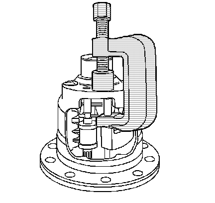

Locking Differential Disassemble (8.6, 9.5 Inch Axles)
Locking Differential Disassemble (8.6, 9.5 Inch Axles)
Tools Required
J 26252 Locking Differential Governor Remover
1. Remove the ring gear, if necessary.
2. Remove the governor bushing using the J 26252.
3. Remove the governor assembly.
To aid in the removal of the governor assembly, turn the side gear as necessary to position the governor assembly between two of the side gear teeth.

4. Remove the latching bracket assembly bushing using the J 26252.
To aid in the removal of the latching bracket assembly, turn the side gear as necessary to position the latching bracket assembly between two of the side gear teeth.
5. Remove the pinion shaft lock bolt.
6. Remove the pinion shaft.
7. Remove the differential pinion gears and the thrust washers.
Rotate the pinion gears and roll the pinion gears and the thrust washers out of the case through the differential window.
Mark the pinion gears and thrust washers accordingly for re-assembly.
8. Remove the thrust block.
9. Remove the right side gear and clutch discs assembly.
10. Remove the right side shim.

11. Remove the left side gear cam unit and clutch disc assembly.

12. Remove the left side gear thrust washer.